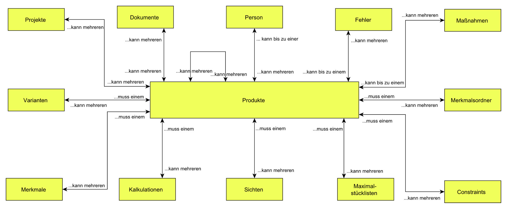

Beziehungen¶

Beziehungen eines Produkts
- Person
- Jedem Produkt kann genau eine Person zugeordnet werden, die für das Produkt verantwortlich ist. Die Zuordnung der Person erfolgt im Stammdatenblatt des Produkts über Katalogauswahl im Feld “Verantwortlich”.
Bemerkung
Alternativ kann auch eine Rolle als produktverantwortlich eingetragen werden.
- Fehler
- Einem Produkt können Fehler zugeordnet werden, die im Zusammenhang mit dem Produkt aufgetreten sind. Die Zuordnung eines Fehlers zu einem Produkt erfolgt im Stammdatenblatt des Fehlers über Katalogauswahl im Feld “Produkt” (siehe Anwendungshandbuch zu CONTACT Quality Issues)
- Maßnahmen
- Einem Produkt können Maßnahmen zugeordnet werden, die z.B. zur Behebung eines Fehlers oder zur Produktverbesserung notwendig sind. Die Zuordnung einer Maßnahme zu einem Produkt erfolgt im Stammdatenblatt der Maßnahme über Katalogauswahl im Feld Produkt (siehe Anwendungshandbuch zu CONTACT Actions).
- Dokumente
- Einem Produkt können Dokumente zugeordnet werden, die z.B. das Produkt und seine Eigenschaften oder den Produktentwicklungsprozess dokumentieren (siehe Anwendungshandbuch zu CONTACT Documents). Die Zuordnung eines Dokuments zu einem Produkt erfolgt z.B. über Drag&Drop eines Dokumentes auf die Registerkarte Dokumente des Produktdatenblatts.
- Produktmodule
- Ein Produkt kann modular auf der Basis anderer Produkte (Module) aufgebaut werden. In diesem Fall sind einem Produkt mehrere andere Produkte als Modul zugeordnet. Die Zuordnung eines Produkts als Modul eines anderen, übergeordneten Produkts erfolgt über Drag&Drop des Moduls auf die Registerkarte Module des übergeordneten Produkts.
- Projekte
- Ein Produkt kann einem oder mehreren Projekten zugeordnet werden, in denen das Produkt z.B. neu entwickelt oder weiterentwickelt wird. Zudem können einem Projekt auch mehrere Produkte zugeordnet werden, die z.B. im Rahmen des Projektes entwickelt werden (siehe Anwendungshandbuch zu CONTACT Projects). Zuordnungen zwischen Produkt und Projekt erfolgt in der Regel über Drag&Drop des einen Objektes auf den entsprechenden Registerkarten für Beziehungen im Datenblatt des anderen Objektes.
- Kalkulationen
- Zu einem Produkt können mehrere Kosten- bzw. Preis- oder Wirtschaftlichkeitskalkulationen durchgeführt werden (siehe Anwendungshandbuch zu CONTACT Product Costing). Die Neuanlage einer Kalkulation zu einem Produkt erfolgt aus dem Beziehungsregisterkarte Kalkulationen des Produktdatenblatts über die Operation Neu bzw. Neu aus Vorlage.
- Sichten
- Über das Variantenmanagement können zu einem Produkt verschiedene Sichten (siehe Arbeiten mit Sichten) definiert werden, die es ermöglichen, Produktvarianten aus unterschiedlichen Gesichtspunkten heraus, d.h. unter Verwendung unterschiedlicher Merkmale, zu beschreiben.
- Maximalstücklisten
- Über das Variantenmanagement können einem Produkt Artikel zugeordnet werden, deren Stücklisten für das Produkt sogenannte Maximalstücklisteen darstellen. Das sind Stücklisten, die alle möglichen Optionen und Alternativen beinhalten. Maximalstücklisten bilden die Basis zur Ausprägung von Variantenartikeln.
- Constraints
- Über das Variantenmanagement können einem Produkt Constraints zugeordnet werden. Auf der Basis von Constraints werden regelbasiert gültige Produktvarianten definiert.
- Merkmalsordner
- Über das Variantenmanagement können einem Produkt Merkmalsordner zugeordnet werden. Über Merkmalsordner können die einem Produkt zugeordneten Merkmale nach beliebigen Kriterien geordnet werden.
- Merkmale
- Über das Variantenmanagement können die Merkmale von Produkten definiert werden. Auf Basis von Merkmalen werden die Varianten des Produkts beschrieben.
- Varianten
- Über das Variantenmanagement werden über Sichten, Merkmale und Constraints die gültigen und erlaubten Varianten des Produkts generiert.